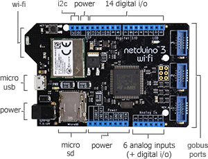

Sommaire
- LE MATERIEL
- Le circuit 342x: 18-Bit, Multi-Channel ΔΣ Analog-to-Digital Converter with I2C Interface and On-Board Reference
- Les cartes Netduino
- Les cartes FEZ
- LE LOGICIEL
1. LE MATERIEL
1.1 Le circuit 342x: 18-Bit, Multi-Channel ΔΣ Analog-to-Digital Converter with I2C Interface and On-Board Reference.
- Présentation
- Schéma interne du composant
- Adressage
- Influence de la résolution sur le débit binaire
- Documentation: pdf
- Distributeur: Go Tronic
Les circuits MCP3422, MCP3423 et MCP3424 sont des convertisseurs analogique numérique 18 bit sigma-delta précis et à faible bruit.


Module 4 canaux analogiques I2C DFR0316
| DFROBOT |
 |
| Documentation - Schéma |
1.2 Les cartes Netduino
Secret Labs
- Microcontrôleur : STM32F405RG 32 bits à architecture Cortex-M4 cadencé à 168 MHz.
- RAM : 164KB+.
- Flash : 1408KB.
- Port Ethernet : 10/100Mbps (Wifi:802.11b/g/n)*.
- E/S numériques : 22
- Entrées analogiques : 6
- Stockage: carte µSD
- IDE : Microsoft Visual Studio
- Framework : .NETMF 4.3
- Langages de programmation : C#, VB
- Compatibilité : shield Arduino, Gadgeteer
 |
 |
| Netduino 3 Ethernet | Netduino 3 wifi* |
- Sites à consulter : Netduino, NETMF
- Distributeurs : Mouser Electronics
1.3 Les cartes FEZ
GHI Electonics (Extrait)
- Microcontrôleur : 180 MHz 32-bit ARM Cortex-M4.(120 MHz 32-bit ARM Cortex-M3 )*
- SoC(SoM)* : G80 G120*
- RAM : 156 KB(2.87 MB)*.
- Flash : 256 KB (13.67 MB)*.
- E/S numériques : 53(60)*
- Entrées analogiques : 16(8)*
- Réseaux : Ethernet TCP/IP, WiFi, and SSL.
- Stockage: carte µSD
- IDE : Microsoft Visual Studio
- Framework : .NETMF 4.3
- Langages de programmation : C#, VB
 |
 |
| PANDA III | COBRA III* (compatible Gadgeteer) |
- Sites à consulter : GHI ELECTRONICS, NETMF
- Distributeurs : Mouser Electronics
2. LE LOGICIEL
2.1 Contenu du répertoire proposé au téléchargement
Le répertoire proposé au téléchargement (au format zip ou tar.gz) contient la solution MCP342x composée :
- Du projet MCP342x : le code source de la classe MCP342x.
- Du projet Netduino : un exemple d'utilisation de cette classe avec une carte Netduino.
- Du projet FezPanda : un exemple d'utilisation de cette classe avec une carte Fez Panda.
2.2 Le NuGet MicroToolsKit
La dernière version compilée de la classe MCP342x se situe dans la bibliothèque MicroToolsKit disponible sur nuget.org.

Organisation des classes contenues dans MicroToolsKit [lien]
Installer cette bibliothèque dans le projet simplifie l'utilisation de cette classe.
2.3 Les Wikis
- Fascicules d'exemples de code pour les cartes Netduino. [lien]
- Fascicule d'exemples de code pour les cartes FEZ. [lien]
2.4 Description et utilisation de la classeMCP342x
- Rôle: Contrôler un capteur de température à infrarouges MCP342x via un bus I²C.
- Assembly: MicroToolsKit (disponible sur nuget.org)
- Espace de noms: Microtoolskit.Hardware.IO
Création d'un projet avec l'IDE Visual Studio
- Créer un nouveau projet en suivant la démarche décrite dans le chapitre "Premier programme en C# étape par étape" du Wiki dédié à une carte Netduino ou du Wiki dédié à une carte Fez. Ces Wikis sont accessibles ici.
- Utiliser le gestionnaire de paquets NuGet pour ajouter la bibliothèque MicroToolsKit ( nuget.org) dans le projet. (Dans l'explorateur de solution, clic droit sur les Références du projet puis choisir Gérer les packages NuGet.... Installer le paquet.)
- Ajouter l'espace de noms Microtoolskit.Hardware.Sensors dans l'en-tête du fichier source.
- Créer un objet en utilisant le constructeur MCP342x.
- Utiliser la méthode ReadVolts pour déclencher une mesure de la tension sur l'une des entrées du convertisseur analogique numérique.
Exemple
namespace test
{
public class Program
{
public static void Main()
{
MCP342x can = new MCP342x();
while(true)
{
byte j = 0;
double resolution = Resolution(can.Resolution);
double gain = System.Math.Pow(2, (byte)can.Gain);
Debug.Print("Continuous on channel " + j + " =>Tension= " + can.ReadVolts().ToString("F2") + " " + "Resol: " + resolution + "-bit " + "Gain: " + gain);
Thread.Sleep(1000);
}
}
}
}
Constructeurs
| Syntaxe | Description | |
 |
TMP102(ADD0 pin, UInt16 Frequency ) | Instancie un objet "TMP102 ". pin : égal à ADD0.GND =>SLA= 0x48. (par défaut) Frequency: >Féquence du signal SCL = 100kHz. (par défaut) Exemple TMP102 ModuleMesureTemp = new TMP102(); |
Enumérations
| Syntaxe | Description | |
 |
ADD0 |
Si la broche ADD0 est connecté à :
|
|
AlertPolarity |
AlertPolarity permet de régler l'état actif de la broche ALERT.
|
|
ConsecutiveFaults |
Une erreur se produit lorsque la température dépasse les limites fixées par l'utilisateur dans les registres THIGH et TLOW. ConsecutiveFaults active la broche ALERT si un, deux, quatre ou six dépassements se sont produits.
|
|
ConversionRate |
Fréquence de conversion
|
|
Registers |
Sélection des registres du TMP102
|
|
ThermostatMode |
|
Méthodes
| Syntaxe | Description | |
|
bool Init(ADD0 addressSelect) |
Initialise le composant avec :
Exemple ModuleMesureTemp.Init(); |
|
bool Init( [ ADD0 addressSelect = ADD0.Gnd ], [ bool oneShotMode = false ], [ AlertPolarity alertPolarity = AlertPolarity.activeHight ], [ ConversionRate conversionRate = ConversionRate.four_Hz ], [ ThermostatMode thermostatMode = ThermostatMode.ComparatorMode ]) |
Initialise le composant avec :
|
|
float ReadAsCelcius() | Renvoi la température de l'air en °C. Exemple temperature = ModuleMesureTemp.ReadAsCelcius(); |
|
float ReadAsFahrenheit() | Renvoi la température de l'air en °F.
Exemple temperature = ModuleMesureTemp.ReadAsFahrenheit(); |
|
float ReadAsKelvin() | Renvoi la température de l'air en K.
Exemple temperature = ModuleMesureTemp.ReadAsKelvin(); |
|
float ReadAsRankine() | Renvoi la température de l'air en °R.
Exemple temperature = ModuleMesureTemp.ReadAsRankine(); |